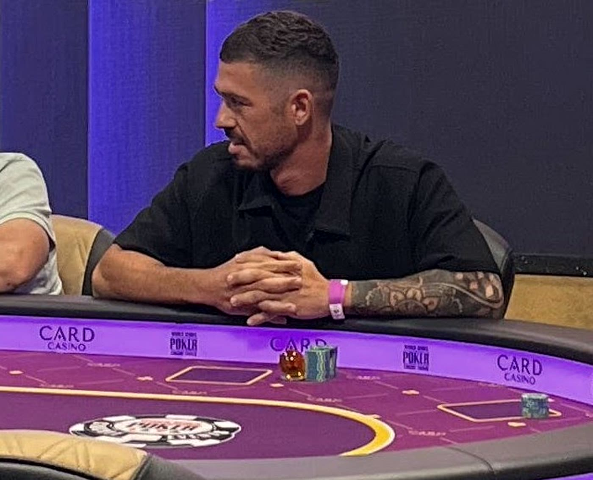
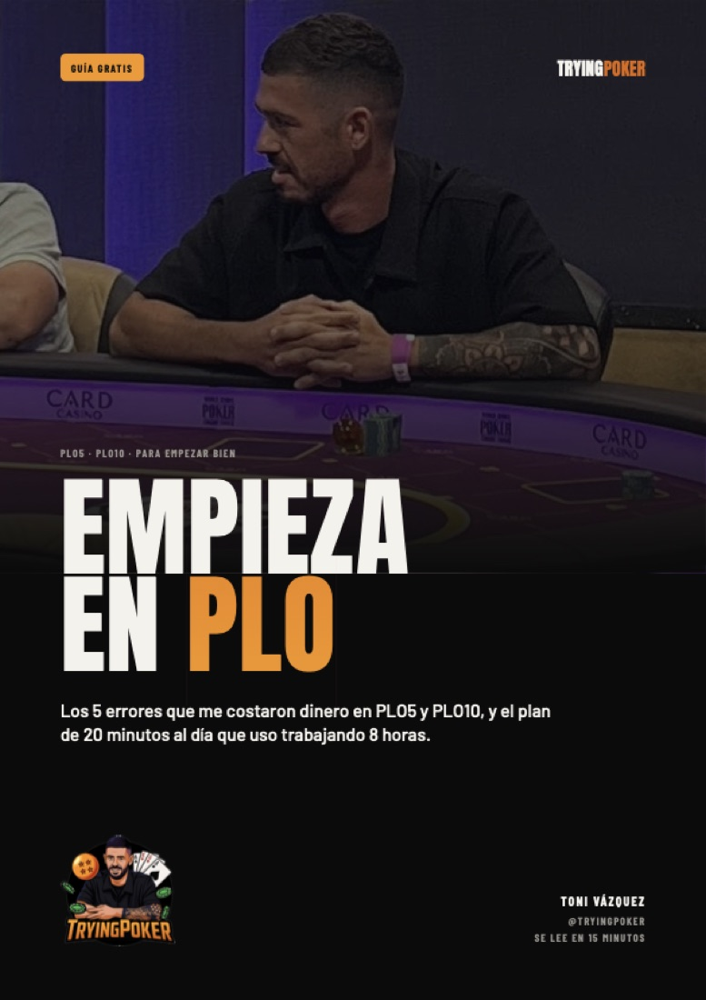
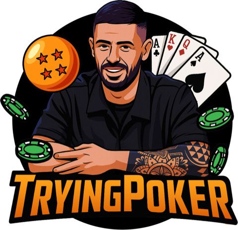

Trabajo 7 horas y juego al PLO
Quiero vivir del póker y lo estoy intentando a la vista de todos: cada mes publico mis números, también cuando pierdo.

No soy un gurú
Soy Toni, de Madrid. Soy funcionario y compagino mi trabajo, mi vida personal y el deporte con el póker. Empecé en Texas Hold’em, me pasé al PLO4 y hoy juego PLO100. Mi siguiente objetivo es PLO200.
Voy solo un poco más adelante que tú y te enseño el camino real, con las malas rachas incluidas. Aquí no hay dinero fácil: hay proceso.
- El proceso realMis resultados de cada mes: manos, resultado, horas y límite.
- Lo que te pasa es normalTilt, meses en negativo y ganas de dejarlo. A mí también.
- Empieza bienBankroll, mentalidad, varianza y estudio, explicados paso a paso.

Empieza en PLO
5 errores que debes evitar si quieres mejorar como jugador de PLO4.
Una guía gratuita basada en mi experiencia, desde los microlímites hasta PLO100. Aprende a cuidar tu bankroll, trabajar tu mentalidad y entender por qué tomar buenas decisiones es mucho más importante que ganar hoy.
- No respetar tu bankrollCuánta banca necesitas en cada nivel: un mínimo de 100 cajas.
- Obsesionarte con la gráficaEvalúa tus decisiones, no tus ganancias.
- No trabajar tu mentalidad desde el principioAprende a reconocer el tilt y a cerrar una sesión.
- No entender la varianzaPuedes jugar bien y perder, y jugar mal y ganar.
- Confundir volumen con mejoraJugar más no significa jugar mejor.

Nos vemos en las mesas
Cada mes publico mis números en Instagram y en YouTube. Sígueme y míralo por ti mismo.